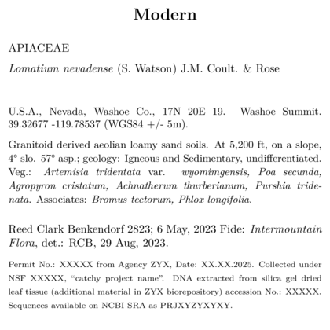

Overview
BL has seven standard templates - further details on several of them are in other vignettes.
Several of these templates (which I interchangeably call ‘skeletons’,
especially in code) are included in vignettes. The
SOS template is used as an example for basic label
customization in Customizing
a label template. Details and notes on using both the
custom fonts skeletons are in Customizing
label fonts. And maps, and logos are both
treated in Labels
with graphics
Label templates need to copied from the r package to a local location on the users computer.
You can copy all at once, as shown below, or copy them one at a time as shown in other vignettes.
p2lib <- file.path(
system.file(package = 'BarnebyLives'),
'rmarkdown', 'templates', 'labels', 'skeleton'
)
templates <- list.files(p2lib)
templatesUse map to copy all of the skeletons.
Default
skeleton-default.Rmd

- skeleton-default.Rmd
- code
- Useful for most collections
- Detail light
Research
skeleton-research.Rmd

- skeleton-research.Rmd
- code
- Useful for herbarium collections which will serve as vouchers for systematics projects.
- Detail heavy
Seeds of Success
skeleton-SOS.Rmd
The SOS label was the original template, and is clearly closely related to the Scientific label.

- skeleton-SOS.Rmd
- code
- Designed for use with a specific U.S. government program, similar to research skeletons.
- Detail heavy
Modern
skeleton-modern.Rmd

- skeleton-modern.Rmd
- code
- A mid-century look
- Balances details and aesthetics.
Custom fonts
skeleton-customfont.Rmd
<br
- skeleton-customfont.Rmd (& skeleton-customfont-downloaded.Rmd)
- code
- code
- Both based on the research/SOS templates, modified YAML headers to make using specific fonts easier.
Maps
skeleton-maps.Rmd

- skeleton-maps.Rmd
- code
- Banger of a mid-century classic, BL also has the functions to create the maps.
Logos
skeleton-logo.Rmd
- skeleton-logo.Rmd
- code
-
caveat emptor I’ve always preferred stamped on institution
logos, but to each their own.
- Detail light